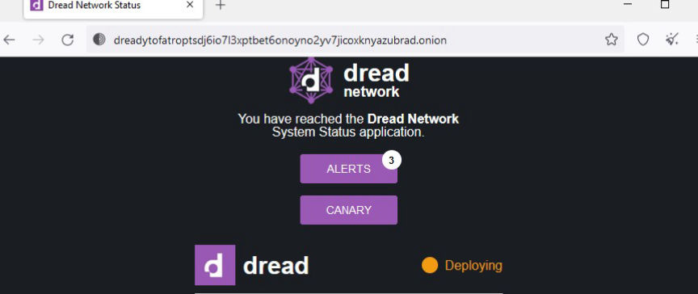
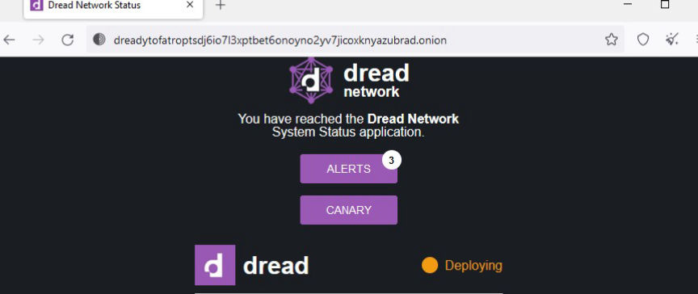

Dread is Five Years Old
~4 min read | Published on 2023-02-22, tagged Dread using 806 words.
Dread is the darknet's reddit-like forum that supports free speech. Dread has been in existence since its launch on February 15, 2018. It has been the most popular forum for darknet users in that period.

Unlike most darknet services, Dread has managed to survive the numerous DDoS attacks it has faced since its inception. In the last five years, Dread has been the one of most important resources for the dark web community. We are going to look into some of its biggest contributions to the community in that period.
HugBunter launched Dread to foster free speech following the ban of hundreds of subreddits by Reddit. Dread has allowed its users to discuss anything through various subdreads on the forum.
For obvious reasons Dread does not support the sharing of personal information, and hate speech. The sale of restricted substances through the forum is also banned. Users are free to join discussions about darknet markets and vendors on the /d/DarknetMarkets subdread.
Dread's support for free speech was highlighted in June 2020 after Paris, one of the forum's admins created the /d/BlueLeaks subdread. Dread users were able to freely discuss BlueLeaks through the subdread.
In a bid to stop the unabating DDoS attacks that plague dark web services, Dread participated in the creation of Endgame, a DDoS protection filter.
Endgame was released in early 2020 and has played a big role in the mitigation of DDoS attacks. Services that implemented Endgame were able to withstand attacks. The now-defunct Empire market and the largest darknet market at the time, implemented Endgame after it was launched and was able to stay online for four consecutive months.
In addition to having subdreads that educate its users on topics such as privacy and Operations Security, Dread has been the go-to resource for the latest occurrences on the dark web.
Access to information is crucial to the survival of darknet users. Lack of access to accurate information could lead to the loss of one's funds and privacy. Dread has played a big role in keeping its users informed.
In late March 2019, Dream Market's admin announced that the market was going to shut down at the end of April 2019. Dream Market had been in operation for six years. It is through Dread that an official Dream Market moderator issued an official explanation to the community. The shutdown was attributed to a DDoS attacker who wanted a $400,000 payout to stop attacking the market. Dream's admins decided to close the market because paying the attacker would not have been a lasting solution.
Dread gave darknet market users a platform to discuss and find markets to move to following Dream's exit.
Towards the end of April 2019, Hugbunter warned Dread's users of Wall Street Market's imminent exit scam. The market's exit was characterized by the movement of bitcoin from the market's wallets. An official moderator explained that the bitcoin was being moved manually after a server problem had made it impossible for the market to synchronize its bitcoin wallets with the blockchain. The market exit scammed at the end of April. On May 2, 2019, Europol announced that the market had been seized in a global operation.
In late August 2020, Empire Market exit scammed leaving its more than a million users stranded. The market's admin pocketed approximately $30 million of users' funds. The only explanation the market's users received was from a post on Dread by one of Empire's moderators, Se7en.
In the post, Se7en said the market's admins had been paying an attacker and they may have decided to exit after a second attacker who could take down Endgame links came into the picture. Se7en claimed the exit would not have happened had Tor implemented PoW to stop the attacks.
At the end of April 2021, Dread quickly warned its users after DarkNetLive and DarkDotFail's domains got hijacked by an unknown attacker. The attacker hosted phishing sites on the domains. Dread's warning saved those who saw it from losing their cryptocurrency and credentials to the attacker. DarkDotFail estimated that those who used links posted by the attacker may have lost a total of more than 250,000 euros.
In march 2020, Hugbunter launched Recon, a search engine for darknet markets. Recon hosts a collection of vendor profiles and darknet market listings from as far as the Silk Road era. When online, Recon provides darknet users with a comprehensive archive of darknet market's data. Recon allows darknet users to easily research darknet markets and vendors.
Dread will obviously continue to be one of the most crucial players in shaping the future of the darknet community.
[Edit] The point about "zero censorship" has been disputed due to ongoing concerns on the link between Dread and Alphabay. I'll put it as "much less censored" when compared to Reddit, and "zero to non censorship" on non-market related content.

Dread's landing page
Unlike most darknet services, Dread has managed to survive the numerous DDoS attacks it has faced since its inception. In the last five years, Dread has been the one of most important resources for the dark web community. We are going to look into some of its biggest contributions to the community in that period.
Zero Censorship
HugBunter launched Dread to foster free speech following the ban of hundreds of subreddits by Reddit. Dread has allowed its users to discuss anything through various subdreads on the forum.
For obvious reasons Dread does not support the sharing of personal information, and hate speech. The sale of restricted substances through the forum is also banned. Users are free to join discussions about darknet markets and vendors on the /d/DarknetMarkets subdread.
Dread's support for free speech was highlighted in June 2020 after Paris, one of the forum's admins created the /d/BlueLeaks subdread. Dread users were able to freely discuss BlueLeaks through the subdread.
Endgame DDoS protection
In a bid to stop the unabating DDoS attacks that plague dark web services, Dread participated in the creation of Endgame, a DDoS protection filter.
Endgame was released in early 2020 and has played a big role in the mitigation of DDoS attacks. Services that implemented Endgame were able to withstand attacks. The now-defunct Empire market and the largest darknet market at the time, implemented Endgame after it was launched and was able to stay online for four consecutive months.
Keeping the community Informed
In addition to having subdreads that educate its users on topics such as privacy and Operations Security, Dread has been the go-to resource for the latest occurrences on the dark web.
Access to information is crucial to the survival of darknet users. Lack of access to accurate information could lead to the loss of one's funds and privacy. Dread has played a big role in keeping its users informed.
In late March 2019, Dream Market's admin announced that the market was going to shut down at the end of April 2019. Dream Market had been in operation for six years. It is through Dread that an official Dream Market moderator issued an official explanation to the community. The shutdown was attributed to a DDoS attacker who wanted a $400,000 payout to stop attacking the market. Dream's admins decided to close the market because paying the attacker would not have been a lasting solution.
Dread gave darknet market users a platform to discuss and find markets to move to following Dream's exit.
Towards the end of April 2019, Hugbunter warned Dread's users of Wall Street Market's imminent exit scam. The market's exit was characterized by the movement of bitcoin from the market's wallets. An official moderator explained that the bitcoin was being moved manually after a server problem had made it impossible for the market to synchronize its bitcoin wallets with the blockchain. The market exit scammed at the end of April. On May 2, 2019, Europol announced that the market had been seized in a global operation.
In late August 2020, Empire Market exit scammed leaving its more than a million users stranded. The market's admin pocketed approximately $30 million of users' funds. The only explanation the market's users received was from a post on Dread by one of Empire's moderators, Se7en.
In the post, Se7en said the market's admins had been paying an attacker and they may have decided to exit after a second attacker who could take down Endgame links came into the picture. Se7en claimed the exit would not have happened had Tor implemented PoW to stop the attacks.
At the end of April 2021, Dread quickly warned its users after DarkNetLive and DarkDotFail's domains got hijacked by an unknown attacker. The attacker hosted phishing sites on the domains. Dread's warning saved those who saw it from losing their cryptocurrency and credentials to the attacker. DarkDotFail estimated that those who used links posted by the attacker may have lost a total of more than 250,000 euros.
Recon
In march 2020, Hugbunter launched Recon, a search engine for darknet markets. Recon hosts a collection of vendor profiles and darknet market listings from as far as the Silk Road era. When online, Recon provides darknet users with a comprehensive archive of darknet market's data. Recon allows darknet users to easily research darknet markets and vendors.
Dread will obviously continue to be one of the most crucial players in shaping the future of the darknet community.
[Edit] The point about "zero censorship" has been disputed due to ongoing concerns on the link between Dread and Alphabay. I'll put it as "much less censored" when compared to Reddit, and "zero to non censorship" on non-market related content.